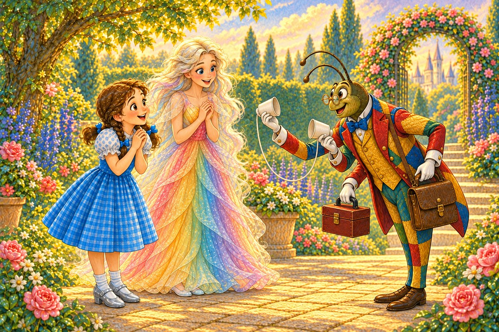
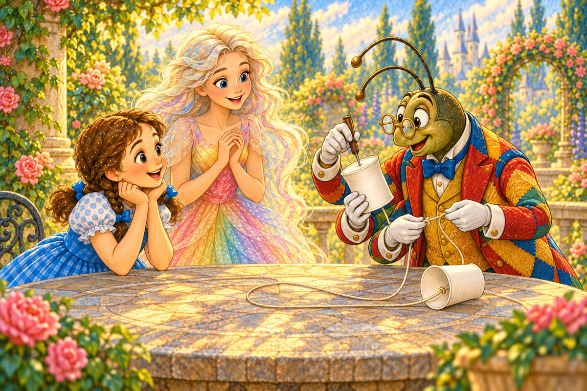
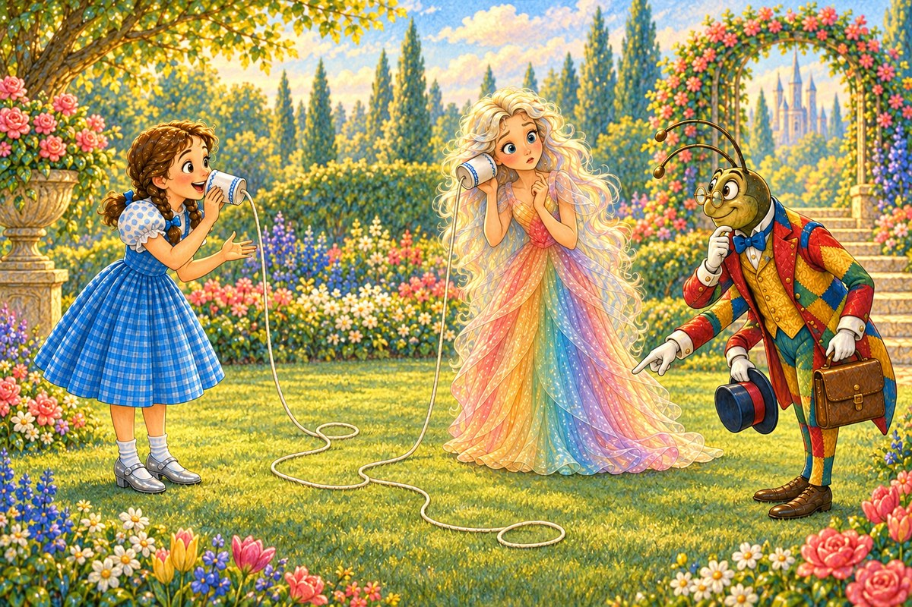
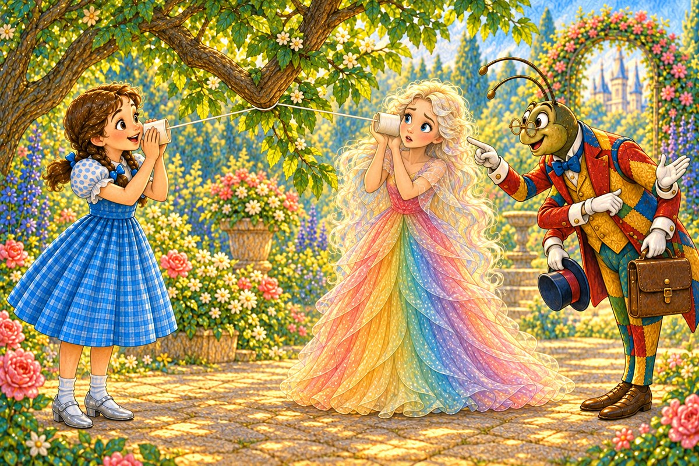
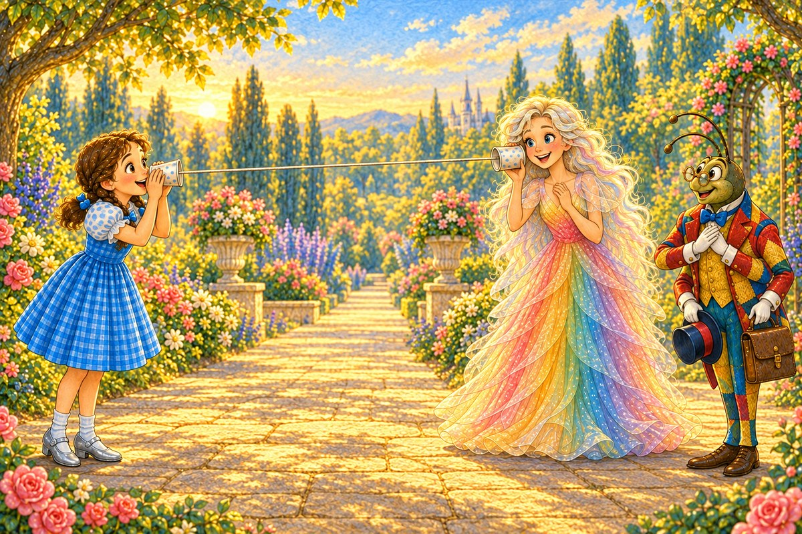
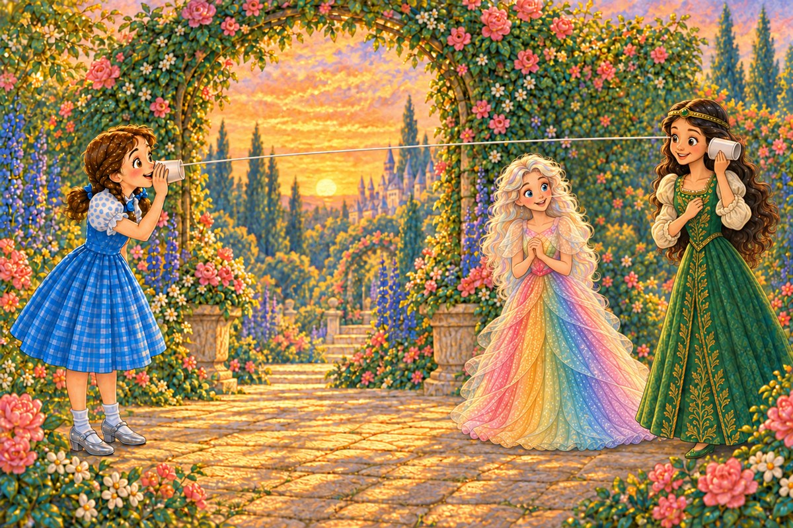
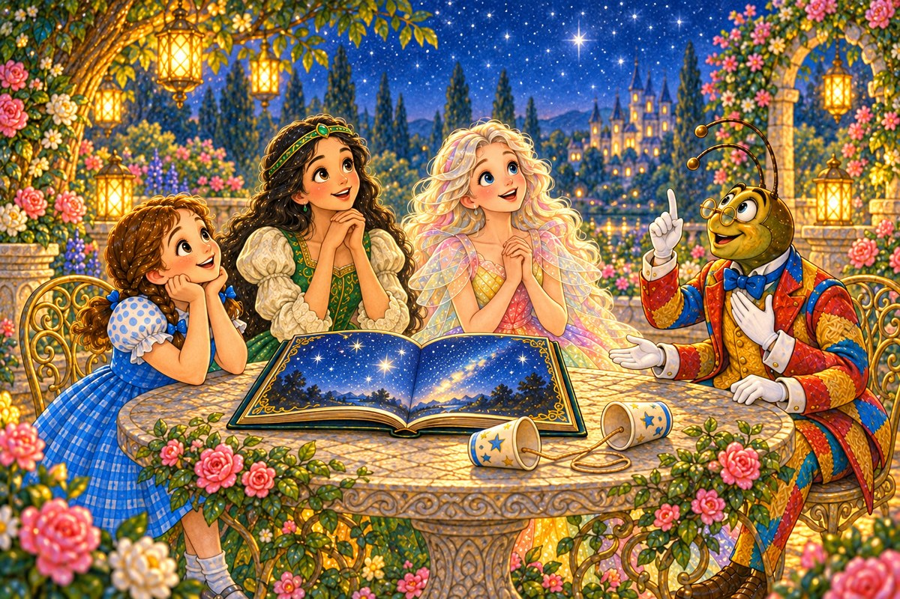

Pahina 1
Kinahapunan, bumalik si Propesor Wogglebug sa hardin.
May dala siyang dalawang basong papel, mahabang pisi, at maliit na kahon.
Isang bagong kuwento sa Lupain ng Oz
Basahin ang tatlong bagong pahina bawat araw. Bago magpatuloy, balikan muna ang mga pahinang nabasa na.

Kinahapunan, bumalik si Propesor Wogglebug sa hardin.
May dala siyang dalawang basong papel, mahabang pisi, at maliit na kahon.
Nasa kabilang panig ng bakod si Ozma.
Gusto siyang tawagin ni Dorothy, ngunit hindi umabot ang mahina niyang boses.

“Gagawa tayo ng munting telepono,” sabi ng propesor.
Binutasan niya ang bawat baso.
Ipinadaan niya ang pisi sa mga butas at itinali ang mga dulo.

Humawak ng mga baso sina Dorothy at Polychrome.
Maluwag ang pisi at nakahiga sa damo.
Nagsalita si Dorothy, ngunit walang narinig si Polychrome.

“Dapat mahigpit ang pisi,” paliwanag ng propesor.
Lumayo si Polychrome hanggang mahigpit ito.
Ngunit nakadikit ang pisi sa isang mababang sanga.
Muling nagsalita si Dorothy.
Putol-putol ang narinig ni Polychrome.
Tiningnan nila ang pisi.
“Hindi ito dapat nakadikit sa anuman,” sabi ni Wogglebug.

Lumipat sila sa landas.
Mahigpit ang pisi, at wala itong tinatamaan.
Nagsalita si Dorothy.
Nayanig nang kaunti ang ilalim ng baso.
Dinala ng pisi ang panginginig sa kabilang baso.
Inilapit iyon ni Polychrome sa tainga niya.
Malinaw niyang narinig, “Nasa mesa ang aklat ng mga bituin!”

Dinala ni Polychrome ang isang baso kay Ozma.
Maingat nilang iniunat ang pisi sa bukas na tarangkahan.
Hindi ito dumikit sa bakod.
Nagsalita si Dorothy sa kaniyang baso.
“Ozma, magbabasa tayo tungkol sa mga bituin!”
Nakinig si Ozma.
Narinig niya ang buong paanyaya.
“Darating ako!” sagot ni Ozma.
“Mahigpit ang pisi, walang dumidikit dito, at malapit sa tainga ko ang baso. Kaya malinaw ang boses mo.”

Dumating si Ozma dala ang aklat.
Yumuko si Propesor Wogglebug.
“Sa susunod, isa pang eksperimento!” sabi niya.
Umupo sila sa ilalim ng mga bituin.
Pag-usapan natin